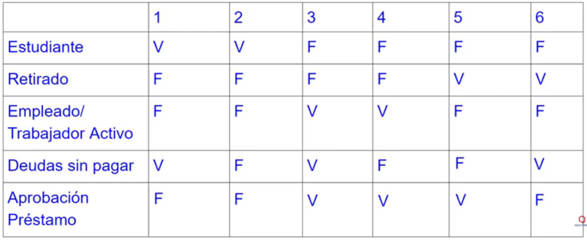

La tabla de decisión es una herramienta que sintetiza procesos en los cuales se dan un conjunto de condiciones y un conjunto de acciones a tomar según el valor que toman las condiciones. Puede utilizarse como herramienta en los distintos momentos del proyecto, esto es: en la exposición de los hechos, en el análisis del sistema actual, en el diseño del nuevo sistema y en el desarrollo del software.
Las tablas de decisión se emplean desde mediados de 1950, cuando fueron desarrolladas por la General Electric para el análisis de funciones de la empresa como control de inventarios, análisis de ventas, análisis de créditos y control de transporte y rutas.
La tabla de decisión está integrada por: matriz de condiciones, matriz de acciones y matriz de reglas para condiciones y acciones. En la matriz de condiciones se enumeran todas las situaciones que pueden presentarse. Las reglas de condiciones indican qué valor debe asociarse a cada una de las condiciones. En la matriz de acciones se enlistan el conjunto de todos los pasos que se deben seguir cuando se presentan ciertas condiciones. Las reglas de acciones muestran las acciones específicas del conjunto que deben emprenderse dados los valores que toman las condiciones.
Tenemos un software que se encarga de validar si una persona puede o no recibir un prestamos, las condiciones que debe tener en cuenta al validar si corresponse prestamos o no son las siguiente:
Creamos la tabla decisiones correspondiente al caso planteado y a partir de ese se crean los casos de prueba
